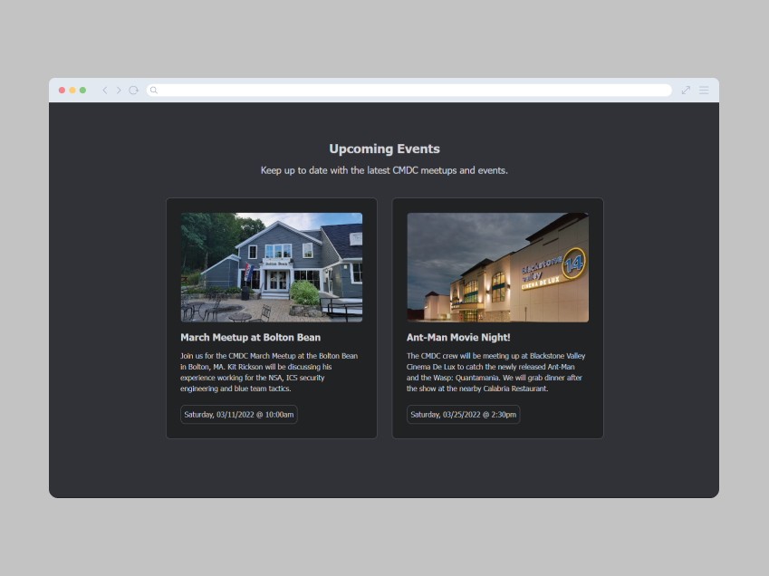
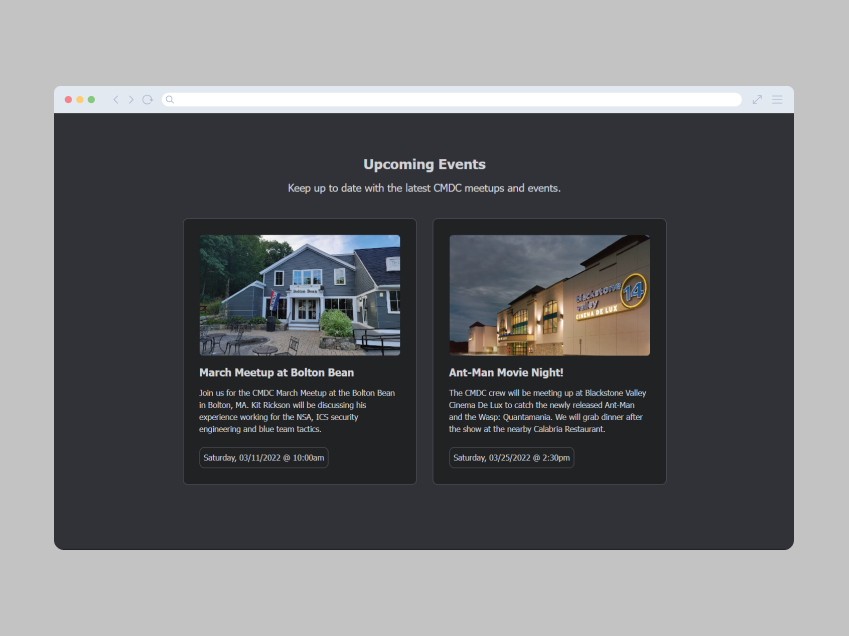

Central Massachusetts Developers Club is a landing page I designed and built as part of Codecademy’s Front-End Engineer Path.
The project assignment was to create a responsive landing page for a club of your choosing, either real or imagined. I decided to spin up a website for a fictitious club dedicated to web developers in Central Massachusetts.
I first made a mockup of the landing page in Adobe Illustrator, then built out the site from scratch using HTML and CSS. I utilized CSS Flexbox and media query techniques to optimize the site across screen sizes. I also created a simple CMDC club logo and opted for a dark themed design.
You can check out the live CMDC website and view the source code on GitHub.